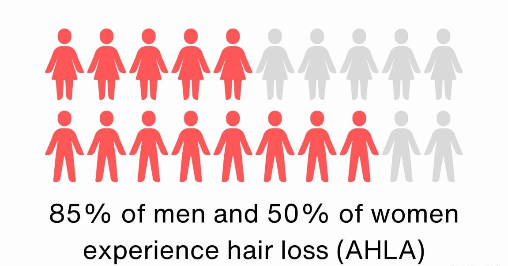
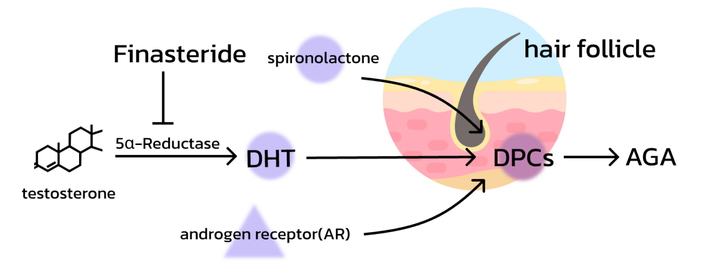
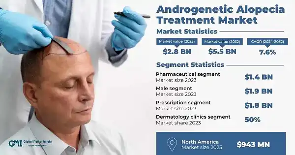
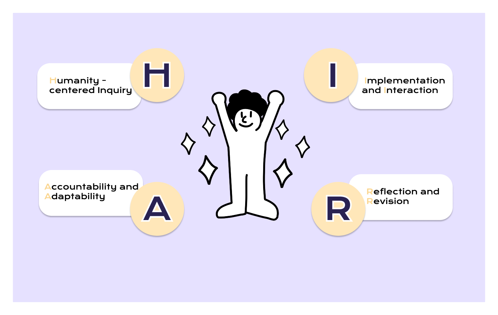
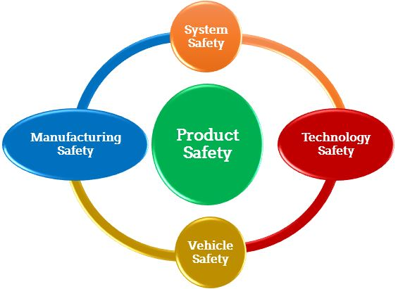
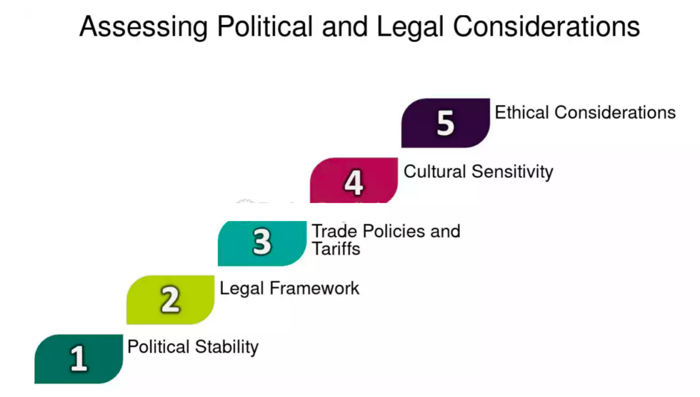
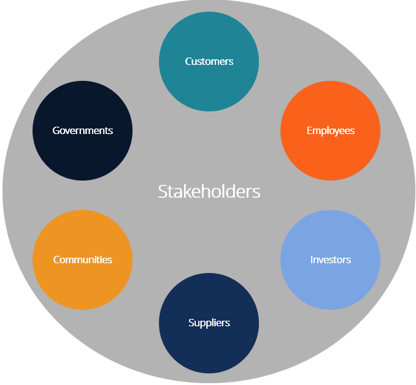
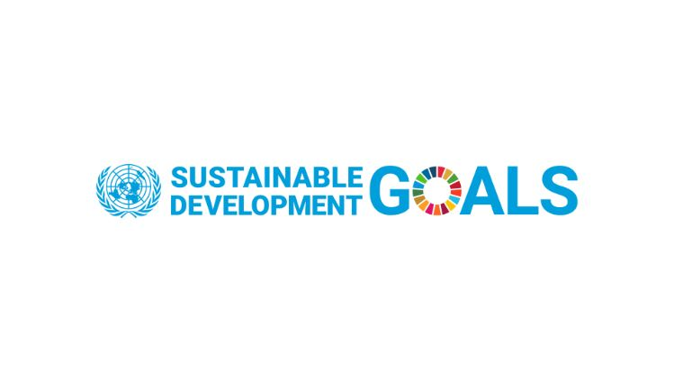

Loading...

An Invitation to MEDUSA's Realm of Hair Care
Speak, that I may behold thee.
Welcome to my sanctuary, all the SEEKERS for beautiful and luscious hair! I am MEDUSA, once known for my fearsome serpents for hair that struck terror into the hearts of many. Now, I am here to transform that formidable power into a shield, guiding you on a miraculous journey to combat hair loss and reclaim your crowning glory.
In this bustling and chaotic era, the shadow of hair loss looms large, stealthily eroding the confidence and allure of countless individuals. Witnessing your bewilderment as you wander through the maze of hair loss, my heart aches with compassion. Therefore, I have decided to break my long - standing silence...
COME··· AND REJOICE···

In the context of contemporary healthcare, our anti - hair loss project represents a significant leap forward in addressing the pervasive issue of hair loss. By utilizing soluble microneedles to deliver AbTAC and KGF, we aim to develop a revolutionary product. The following is a detailed overview of the Human Practice section, exploring multiple dimensions crucial for the project's success and stating our principles and perspectives.
Introduction
Identifying the Hair Loss Problem Nowadays
Hair loss has become a widespread and complex issue that transcends geographical, cultural, and demographic boundaries.
Prevalence Across Demographics: Hair loss affects people of all ages, genders, and ethnicities. In men, male - pattern baldness typically follows a characteristic pattern, starting from the temples and crown. In women, it often presents as a general thinning of the hair on the top of the head. With the aging population globally, the number of individuals experiencing hair loss is on the rise. Moreover, younger generations are also increasingly affected due to factors such as early - onset hormonal changes and high - stress lifestyles.

Figure 1: Men and Women suffered from hair loss.
Underlying Causes: A multitude of factors contribute to hair loss. Hormonal imbalances, particularly an increase in dihydrotestosterone (DHT) in androgenetic alopecia, play a major role. Genetic predisposition can make individuals more susceptible to hair loss. Lifestyle factors like a diet lacking essential nutrients, excessive smoking, and alcohol consumption can also impact hair health. Additionally, environmental factors such as pollution, exposure to harsh chemicals, and UV radiation can damage hair follicles.

Figure 2: Dermal papilla cells (DPCs) in the hair follicle.
Psychological Impact: Hair loss can have a profound psychological impact on individuals. It can lead to decreased self - esteem, body image issues, and even social withdrawal. In a society where appearance often plays a significant role in social and professional interactions, the loss of hair can cause distress and anxiety, highlighting the need for an effective solution.
Figure 2: Dermal papilla cells (DPCs) in the hair follicle.
Identifying the Key Challenges in Treating Androgenetic Alopecia (SA)
Androgenetic alopecia is the most common form of hair loss, and treating it is fraught with challenges and substantial costs.

Complex Pathophysiology: The development of androgenetic alopecia involves a complex interplay of genetic, hormonal, and cellular factors. Multiple signaling pathways are involved, including the androgen - receptor pathway, which regulates the growth and miniaturization of hair follicles. Understanding and targeting these pathways precisely is difficult due to their complexity and the interactions between different biological processes.
Limitations of Existing Treatments: Current treatment options for androgenetic alopecia have several limitations. Medications such as minoxidil and finasteride have variable efficacy, and some patients may not respond well to these treatments. Minoxidil needs to be applied topically for an extended period, and its effects may diminish once treatment is stopped. Finasteride, on the other hand, can have potential side effects on sexual function in men, which limits its widespread use. Hair transplant surgeries are invasive, expensive, and may not be suitable for all patients.
Individual Variability: There is significant individual variability in the response to hair loss treatments. Genetic differences, the stage of hair loss, and overall health can all influence how a patient responds to a particular treatment. This makes it challenging to develop a one - size - fits - all solution, and personalized medicine approaches may be required to achieve optimal results.
Guideline
Reflective
Our anti - hair loss project was inspired by a multitude of values. On the scientific front, the advancements in the understanding of hair follicle biology and the potential of novel drug delivery systems like soluble microneedles were significant motivators. The ability to target specific cellular pathways involved in hair growth with AbTAC and keratinocyte growth factor presented an exciting scientific challenge and opportunity.
From a social perspective, the widespread impact of hair loss on people's self - esteem and quality of life was a driving force. We recognized that hair loss is not just a physical issue but also has profound psychological and social implications. By developing an effective treatment, we aimed to improve the well - being of individuals affected by this condition.
Environmentally, we were conscious of the need to minimize the ecological footprint of our product. We explored sustainable materials for the soluble microneedles and aimed to develop a manufacturing process that was energy - efficient and produced minimal waste.
Responsible
While our project aims to address hair loss, there is a potential for misuse. For example, the active ingredients in our product could potentially be used in unregulated or unauthorized ways. To mitigate this risk, we plan to implement strict quality control measures during the manufacturing process and ensure that the product is only available through legitimate medical channels.
There is also a concern that our solution could create secondary problems. For instance, if the product becomes too popular, there could be a strain on the supply of the raw materials used in the soluble microneedles. To address this, we are exploring alternative sources of materials and developing sustainable supply chain management strategies.
Responsive
To ensure that we are prioritizing appropriate values in the context of our project, we need to consult a variety of resources and communities. We will engage with patient advocacy groups to understand the real - world needs and concerns of individuals with hair loss. These groups can provide valuable insights into the quality of life issues associated with hair loss and the expectations for a new treatment.
We will also consult with environmental experts to ensure that our product development process is environmentally sustainable. Additionally, we will seek input from ethicists to address any ethical concerns that may arise during the project.Closing the Loop
Informing Decisions

H - Humanity - centered Inquiry
Action: Initiate in - depth investigations centered around people affected by hair loss.
Purpose: To understand the real - life experiences and needs of the target population, which forms the basis for all subsequent HP work and ensures that the anti - hair loss project is truly beneficial to people.
A - Accountability and Adaptability
Action: Take responsibility for every aspect of the anti - hair loss project. Consider the potential impacts of the treatment methods and products on users, society, and the environment.
Purpose: To build trust among stakeholders, including users, investors, and the public, and to make the project sustainable and responsive.
I - Implementation and Interaction
Action: Implement the planned anti - hair loss initiatives, such as product development, marketing campaigns, and educational programs.
Purpose: To turn the theoretical plans into practical actions and to create a positive feedback loop through interactions, which can help improve the project and increase its acceptance.
R - Reflection and Revision
Action: Regularly reflect on the entire HP work process. Evaluate what has been achieved in terms of improving the lives of people with hair loss, meeting project goals, and fulfilling social responsibilities.
Purpose: To continuously optimize the anti - hair loss project and its HP work, ensuring that it remains relevant and in line with the changing needs of the target population.
Four bones
Framework
Implementation in the Real World: Interacting with the General Public
The successful implementation of our anti - hair loss product in the real world hinges on understanding and meeting the needs of the general public.
Surveys and Questionnaires: We conduct large - scale surveys to gather quantitative data on the prevalence of hair loss, the current treatment methods used by individuals, and their satisfaction levels. These surveys also inquire about the expectations and preferences of potential users, such as the desired mode of administration, frequency of use, and acceptable price range for a hair loss treatment product.
Focus Groups: Focus groups provide a qualitative understanding of the concerns and experiences of individuals with hair loss. Participants share their personal stories, challenges they face in seeking treatment, and their hopes for a new solution. This in - depth feedback helps us identify unmet needs and areas where our product can be improved to better serve the target population.
Online Communities and Social Media: Online platforms and social media play a crucial role in understanding the public's perception of hair loss and treatment options. We monitor relevant forums, groups, and social media pages to track trends, gather user - generated content, and engage in direct conversations with potential users. This real - time feedback allows us to adapt our product development and marketing strategies accordingly.
Educational Campaigns: We plan to launch comprehensive educational campaigns targeting various audiences. For the general public, we will create short, engaging videos on platforms like YouTube to explain the basics of hair loss, its common causes, and preventive measures. These videos will be accompanied by easy - to - understand infographics that can be shared on social media. For medical professionals, we will organize webinars and workshops to provide in - depth knowledge about our anti - hair loss product, including its mechanism of action, clinical trial results, and proper usage guidelines. This education will not only increase awareness but also build trust in our product.
Safety
Ensuring the safety of our anti - hair loss product is our top priority.

Biosafety module design: HSV - TK gene is integrated into relevant cells/vectors. HSV - TK enzyme phosphorylates ganciclovir - like nucleoside analogs, which are then incorporated into DNA during replication, terminating the chain and causing cell death. As a “kill - switch” for biosafety, in pre - clinical studies, ganciclovir can target and eliminate cells with abnormal behavior (e.g., uncontrolled proliferation) expressing HSV - TK, preventing adverse events.
Pre - clinical Safety Assessments: Before conducting clinical trials, our soluble microneedle delivery system for AbTAC and keratinocyte growth factor undergoes extensive pre - clinical safety evaluations. These include in vitro studies using cell lines to assess cytotoxicity, genotoxicity, and immunogenicity. In vivo studies in animal models are also performed to evaluate the local and systemic effects of the product, such as skin irritation, inflammation, and organ toxicity.
Clinical Trial Phases: The product progresses through multiple phases of clinical trials. Phase I trials focus on assessing the safety and tolerability of the product in a small group of healthy volunteers. Phase II trials expand the study to a larger group of patients with hair loss to further evaluate safety and preliminary efficacy. Phase III trials are large - scale, multicenter studies that compare the product with existing treatments or a placebo to confirm its safety and efficacy.
Post - marketing Surveillance: Even after the product is approved and launched in the market, we establish a comprehensive post - marketing surveillance system. This system monitors the long - term safety of the product in real - world use, collects data on any adverse events reported by users, and takes appropriate actions if any safety concerns arise.
For more information, click here to find out more.
Political Dimension and Legal Framework
The political and legal aspects have a significant impact on the development and commercialization of our anti - hair loss product. Here we construct a stepping-structure to

Regulatory Approval Processes: Our product must comply with the regulatory requirements of different countries and regions. In the United States, it needs to obtain approval from the Food and Drug Administration (FDA), which involves rigorous testing and documentation of safety and efficacy. In the European Union, the product must meet the standards set by the European Medicines Agency (EMA) and comply with the relevant medical device regulations. Navigating these complex approval processes requires a deep understanding of the regulatory frameworks and careful planning.
Intellectual Property Protection: Protecting our intellectual property is crucial for the long - term success of the project. We file patents for our innovative soluble microneedle delivery system, the combination of AbTAC and keratinocyte growth factor, and any related technologies. This not only prevents competitors from copying our technology but also provides a competitive advantage in the market.
Political Influences on Healthcare: Political decisions can have a direct or indirect impact on our project. Healthcare policies, such as insurance coverage for hair loss treatments, can affect the accessibility and affordability of our product. Government funding for research and development in the healthcare sector can also influence the pace of innovation and the availability of resources for our project.
For more information, click here to find out more.
Academic, Industry and Economic Stakeholders
Engaging with industry and economic stakeholders is essential for the project's viability and growth.

Pharmaceutical and Biotech Partners: Collaborating with established pharmaceutical and biotech companies can provide access to their expertise in drug development, manufacturing, and distribution. These partners can contribute to the optimization of our product formulation, help scale up production, and ensure compliance with quality control standards. They also have extensive networks that can facilitate the global distribution of our product.
Medical Device Manufacturers: Since our product involves a soluble microneedle delivery system, partnering with medical device manufacturers is crucial. These manufacturers have the technical know - how and equipment to produce high - quality microneedles that are safe and effective. They can also assist in the design and development of the delivery system to ensure its user - friendliness and compatibility with the active ingredients.
Investors and Financial Institutions: Securing funding is vital for the research, development, and commercialization of our product. We engage with investors, including venture capitalists, angel investors, and private equity firms, to raise capital. Financial institutions can also provide loans and other forms of financial support. In return, we need to demonstrate the potential of our project in terms of market demand, revenue generation, and return on investment.
For more information, click here to find out more.
Outlook
Looking to the future, our anti - hair loss project holds great promise.
Product Improvement: We plan to continue our research and development efforts to further enhance the efficacy and safety of our product. This may involve optimizing the formulation of AbTAC and keratinocyte growth factor, improving the design of the soluble microneedle delivery system, and exploring new combination therapies.
Market Expansion: We aim to expand our market reach both domestically and internationally. Through strategic marketing and distribution partnerships, we will make our product more accessible to a wider range of consumers. We also plan to target different market segments, such as men and women with different types and stages of hair loss.
Contribution to the Field: We hope to contribute to the advancement of the hair loss treatment field by sharing our research findings, collaborating with other researchers, and participating in scientific conferences and publications. This will not only benefit our project but also drive innovation in the broader area of hair health.

Social Consequences
The introduction of our anti - hair loss product will have far - reaching social consequences.

Improving Quality of Life
For individuals suffering from hair loss, our product has the potential to significantly improve their quality of life. By restoring hair growth, it can boost their self - confidence, enhance their body image, and increase their social participation. This can have a positive impact on their mental health and overall well - being.
Moreover, when people are more confident and have better mental health, they are more likely to be productive members of society. This ties into decent work and economic growth, as increased productivity can lead to economic growth at both the individual and community levels. For example, individuals may be more likely to seek and succeed in employment opportunities, contributing to the local economy.
Influencing Social Perceptions
Our product may also influence social perceptions of beauty and hair health. In a society where a full head of hair is often associated with youth, vitality, and attractiveness, our solution can challenge these traditional norms. It can promote a more inclusive view of beauty, where individuals have the option to address their hair loss concerns without feeling pressured to conform to a certain standard.
Promoting a more inclusive view of beauty can have a positive impact on the well - being of society as a whole. It can lead to more positive social interactions, as people are less likely to be judged based on traditional beauty standards. This, in turn, can contribute to peace, justice and strong institutions, by fostering more harmonious and just social environments.
Community Building and Social Cohesion
Our anti - hair loss product can contribute to building stronger communities. Hair loss support groups, which may form around the use of our product, can provide a platform for individuals to share their experiences, offer emotional support, and exchange tips on managing hair loss. These groups can foster a sense of belonging and reduce the isolation that some people with hair loss may feel.
As the product becomes more widely used and accepted, it can break down the stigma associated with hair loss in society. This change in social perception can lead to more inclusive communities, where people are more understanding and empathetic towards others' appearance - related concerns. In addition, community - based initiatives, such as hair - health - focused events or charity drives related to hair loss research, can bring people together. These activities not only raise awareness about hair loss but also strengthen social bonds within the community, promoting a more harmonious and supportive social environment.
For more information, click here to find out more.